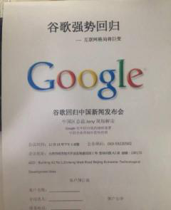
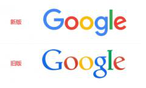

谷歌下周宣布正式回归中国？回应：完全没有的事
【环球科技报道 记者 李文瑶】12月13日上午，有人在朋友圈晒出邀请函称，谷歌将于12月18日下周五举行新闻发布会，由中国区总裁Jony现场解读谷歌在中国市场的战略部署。消息一经曝出，立刻引起了业内人士和媒体的关注，如果消息属实，那么对于国内的互联网企业来说，无疑是个重磅炸弹。
在听到消息后，环球科技即刻联系了谷歌中国区公关相关负责人，据其称，这是完全没有的事情，明显是骗人的。
而目前正在盛传的邀请函确实有三个疑点：一是谷歌已经于今年9月更换了新的logo。按理说，更换之后所有的官方信息都会使用全新标识，而此次曝出的邀请函仍然使用了旧标识。
二是邀请函中所说的中国区总裁Jony是否存在此人。通常来说，如果在官方邀请函中罗利官方负责人，会使用名+姓的方式来表示，例如Jony Thomas等，而不会仅仅是用名字Jony，这是极其不正式的称呼。另外，目前谷歌设立的是亚太区负责人，还没有官方消息称已经设立了中国区总裁这一职务，当然，如果是还未公布的话要另说。
三是开会地点。从以往的发布会来说，如果是谷歌独立召开的北京发布会，发布地点都会选择在清华科技园的北京总部召开，而此次标识的地点却选择了在北京市经济技术开发区的数码庄园，但目前还没有消息能够确认谷歌已经搬离宇宙中心五道口，这开会的地点不得不说也得打上一个问号。
虽然从去年年底便一直有消息盛传谷歌将会重新回归中国市场，而Google Play目前已经面向中国开发者开放，但谷歌方面对此一直没有明确回应。有分析人士称，谷歌可能已经有这方面的规划，但还要考虑中国市场的各方面因素，即使真的回归，恐怕也要循序渐进，不会采取冒进方式。
谷歌方面表示，随后会发出官方声明用以辟谣，环球科技也将继续跟进。